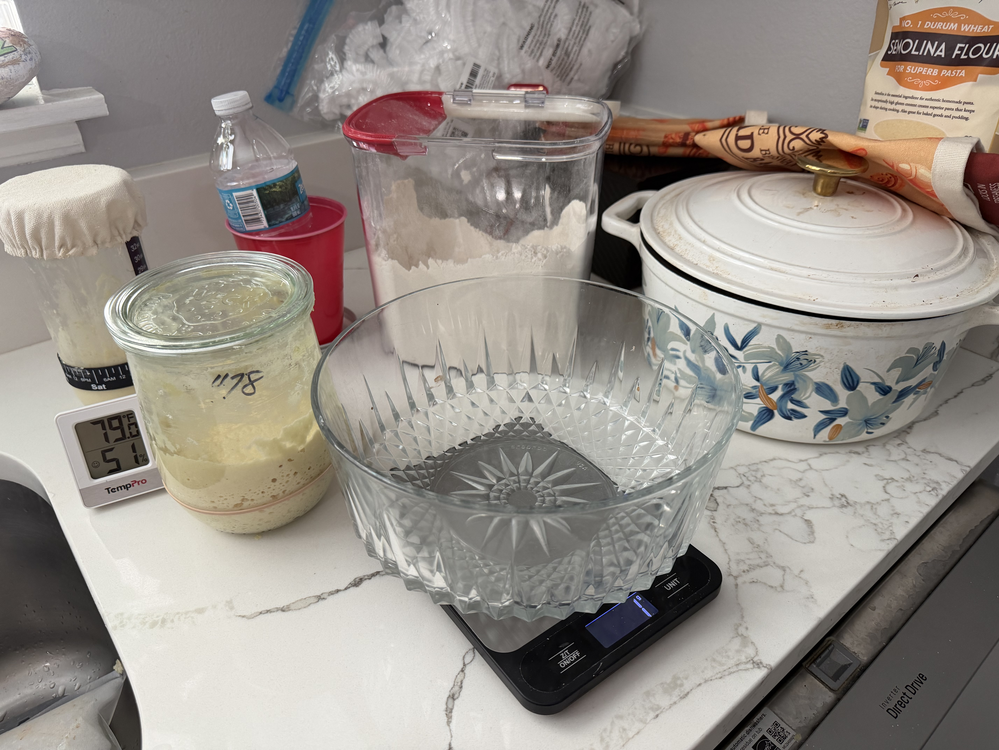
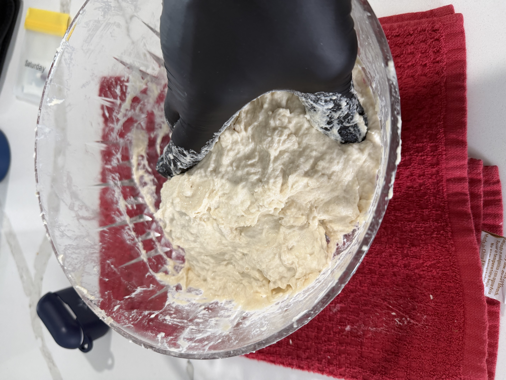
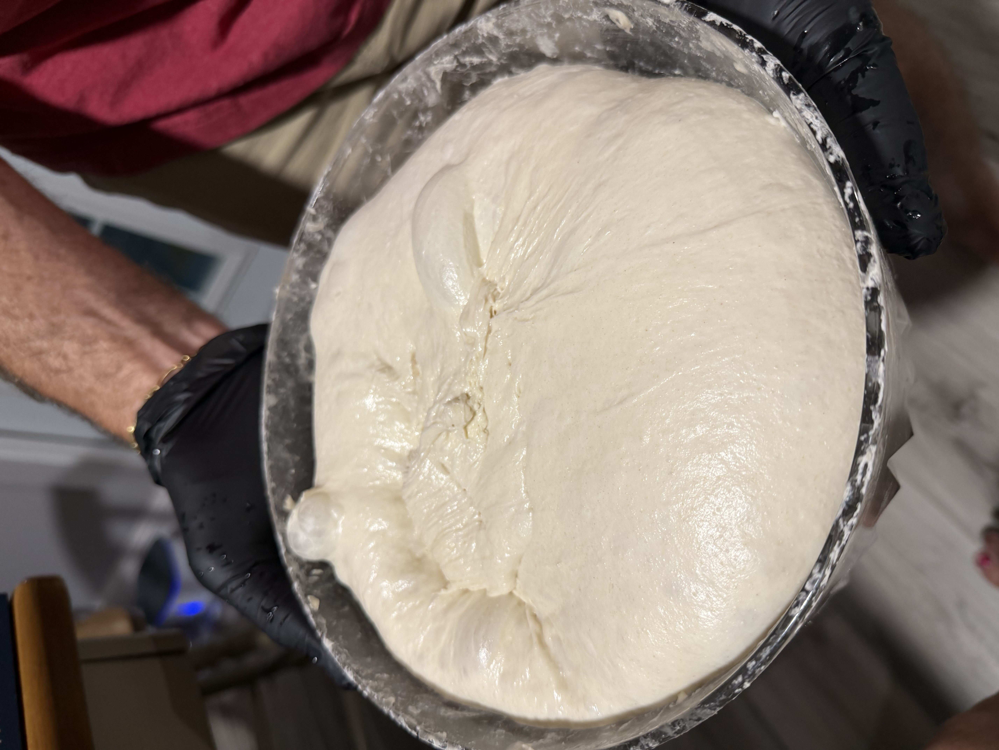
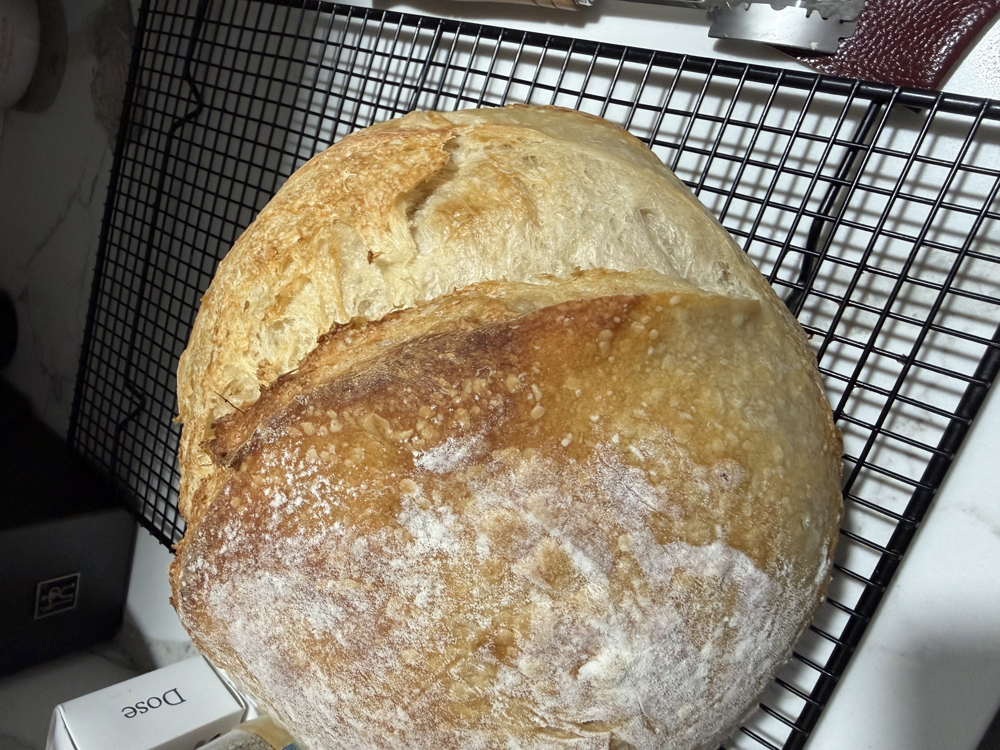

Not every loaf is a fail.
This one actually behaved.
The starter was active, the dough felt strong during bulk, and when I turned it out it had that nice jiggly, airy look that usually means things are going in the right direction. I shaped it, scored it, and put it in the oven with the usual mix of hope and mild skepticism.
I was a bit concerned initially. I forgot to add the salt. It was about 30 minutes into the initial bulk fermentation that I realized my mistake. I added the salt to the dough, and gave it about 15 minutes before I started the strech-and-folds. It appears that this is not a bad option.




When it came out, the crust had good color and a decent ear. I let it cool (mostly), then cut it open.
The crumb was open, airy, and pretty even. Not perfect — there’s always something I’d tweak — but clearly better than a lot of the earlier attempts. This one felt like progress.
What seemed to help
The dough had good strength and a solid rise during bulk. I didn’t rush it. Temperature stayed in a comfortable range the whole time. Nothing dramatic — just the basics lining up better than usual.
What I’ll carry forward
Trust the feel of the dough more than the clock when it looks strong. Keep noting temperatures. And remember that a good loaf is allowed to happen without overthinking it.
Still learning. But this one felt like a step in the right direction.